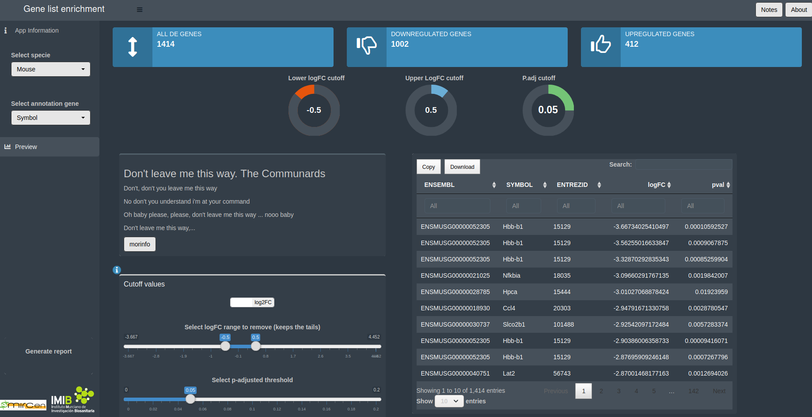
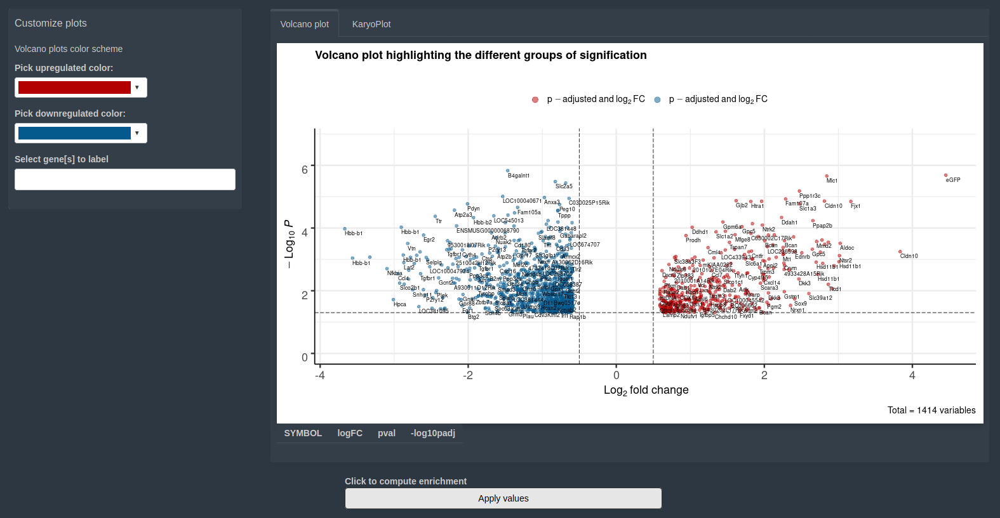
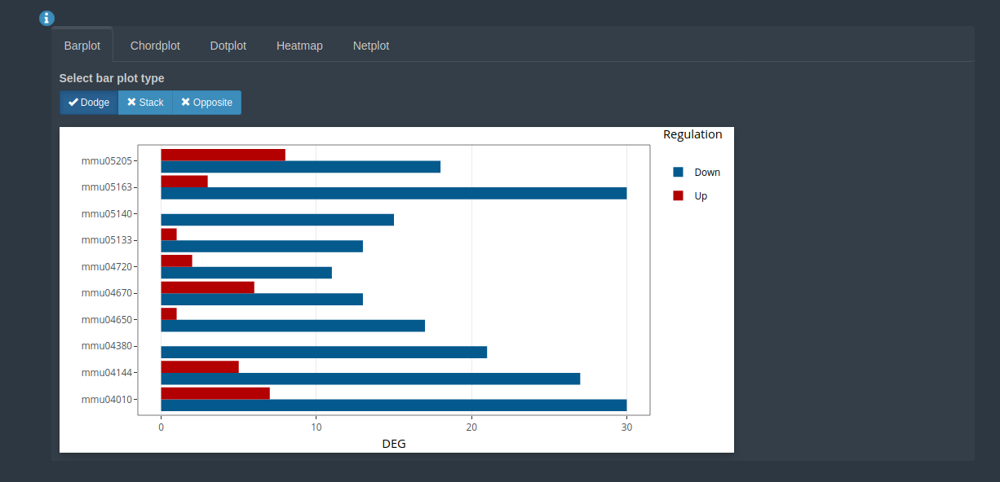

knitr::opts_chunk$set(echo = FALSE) # ffmpeg -i prueba2.mp4 kk.gif
Pues eso, que le das al botón preview y sale esto

El volcano plot es pechiocho

Y cuando le das a enrich, salen un montón de cosicas
